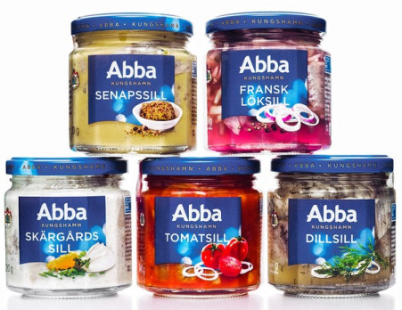

"Netflix and chill" is an Internet slang term used either as an invitation to watch Netflix together or as a euphemism for sexual activity, either as part of a romantic partnership or as casual sex or as a groupie invitation.

"Netflix and chill" is an Internet slang term used either as an invitation to watch Netflix together or as a euphemism for sexual activity, either as part of a romantic partnership or as casual sex or as a groupie invitation.
Sätt dig i soffan, slå på svtPlay och ät sill.
Har du hört om konceptet "räkna får"? Titta på HBO och räkna kills istället för får.

We who have produced this amazing web-app are called Lovisa Carlberg and Vilma Ahlholm. And our group is called